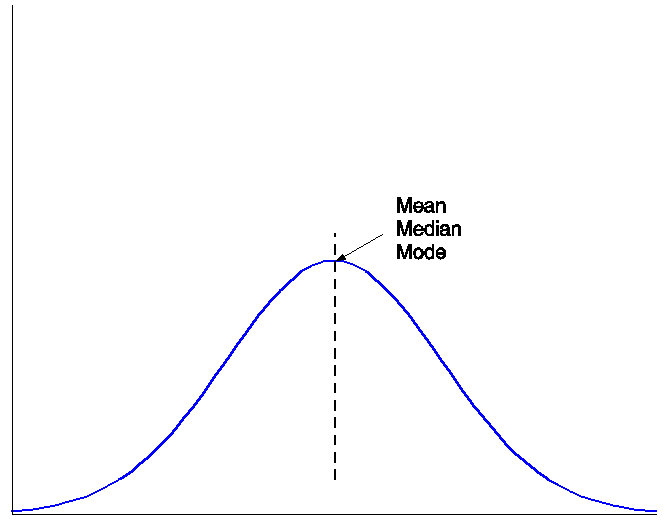
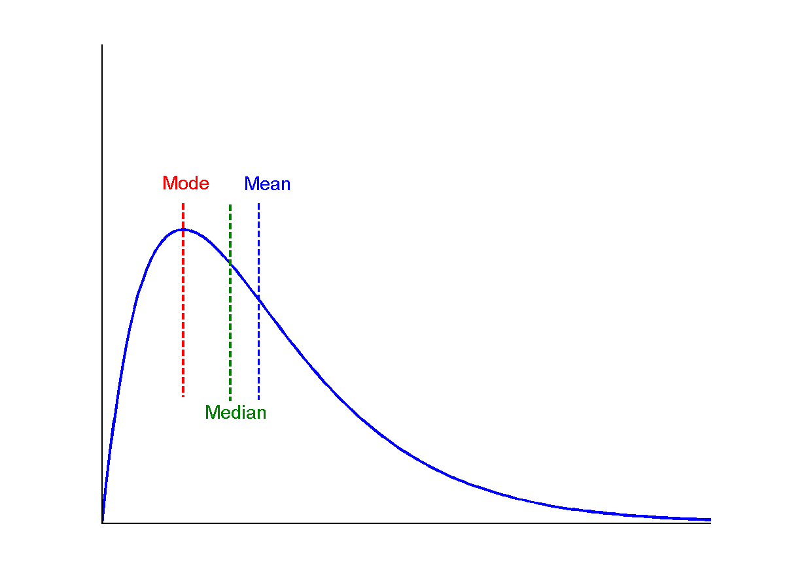
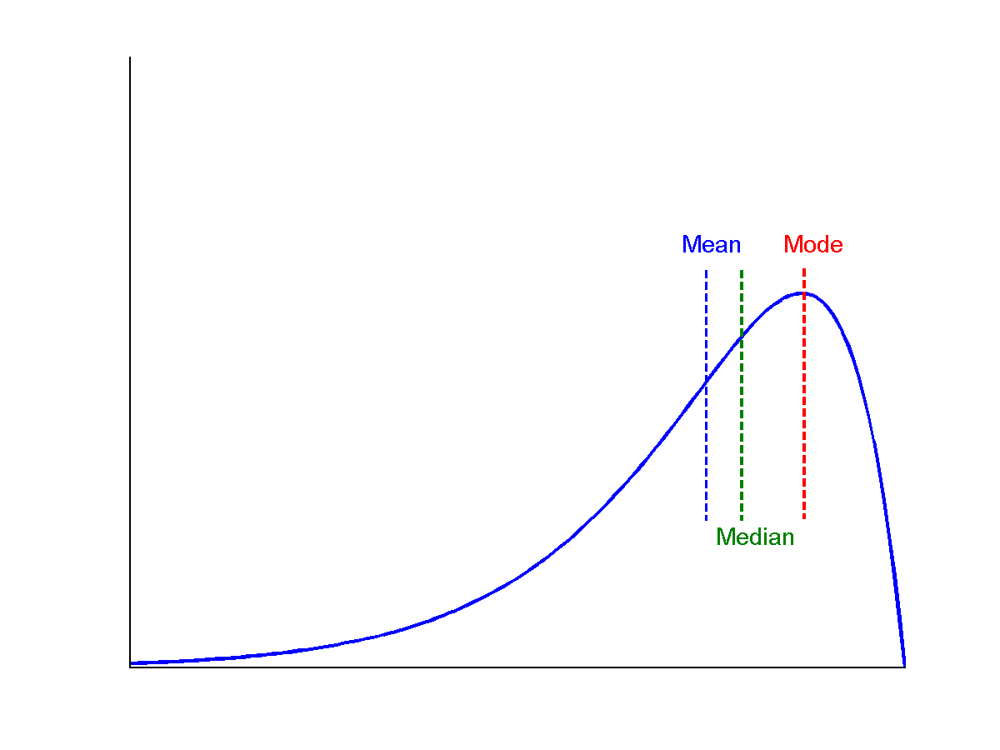
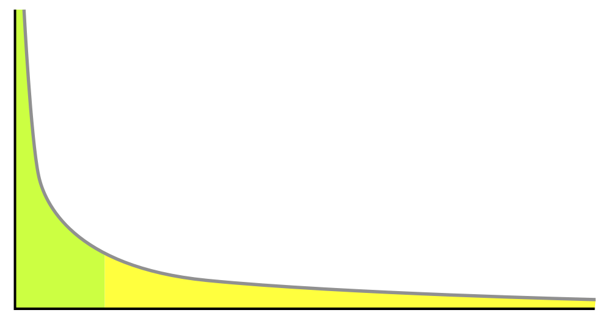
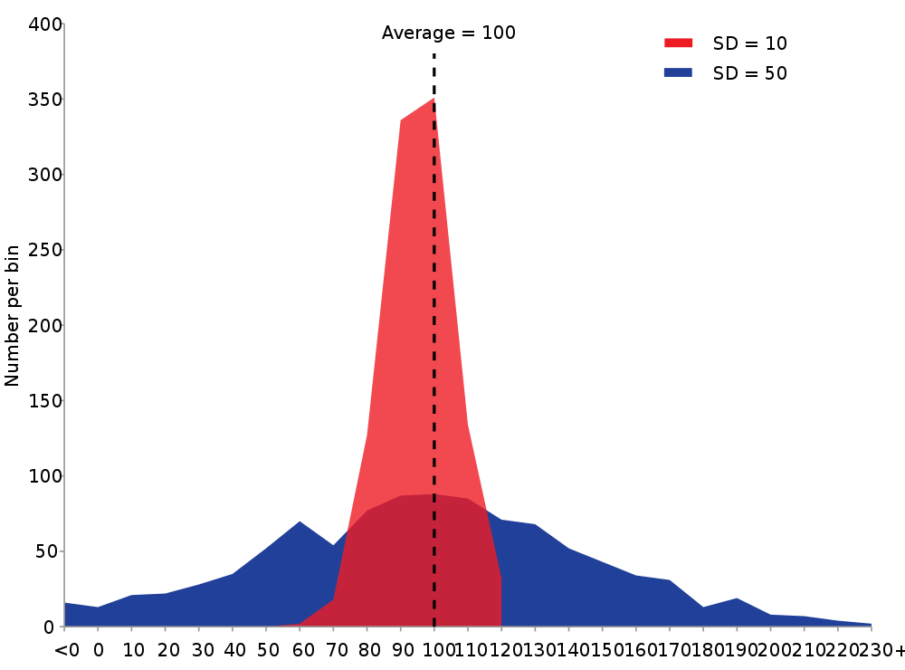
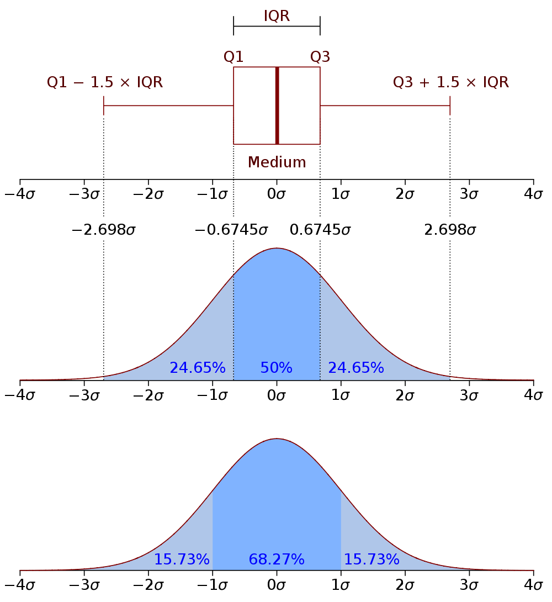
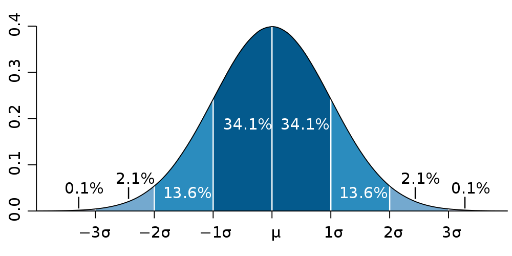
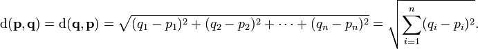
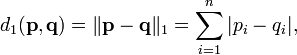
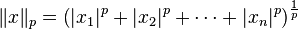

name: inverse layout: true class: left, top, inverse --- # Probability --- ## Nomenclature ### Record a single entity or concept. Also: data object, sample, example, instance, data point ### Feature a characteristic or way of describing a record. Also: attribute, dimension, variable, signal ??? ## Slightly different from book + The meanings do carry different connotations, but are generally transferable + e.g., dimensions is usually used in the math domain + Feature is usually used in the ML domain --- ## Feature Types + Binary: True/False. Also: 0/1 + Numeric: Involving numbers. Also: integer, float, double + Ordinal: Feature with sortable values. + Discrete: countable, finite set. Also: classes + Continuous: unbounded numeric number. Also: integer, float, double + Enumerated: feature named, discrete values. Also: nominal, classed ??? ## Rain data set + Stored did/dot not rain + Stored how many inches it rained + Stored the day as an integer offset from Jan 1 1970 + Stored weather information: Sunny, Partly Sunny, Cloudy, Rainy + Stored barometer reading + Stored day of the week --- ## Central Tendency  ??? ## Define + Mean: "average" all data points divided by size of set + Median: middle value + Mode: The value most likely to be picked + discrete: most common value + continuous: max probability density function --- ## Skew Positive  ??? ## Skew + Think about ```mean - mode``` + Or think about where the "tail" is --- ## Skew Negative  --- ## The Long Tail + Most popular are *very* popular + Everything else, not so much + But there's a lot of everything else  ??? ## Movies + Current releases: millions of people watching + Older movies are rented by < 1 person a week + What is the skew? + Power law distribution (please follow up on Wikipedia or a stats class) + Distributions are important, but will only be covered as necessary --- ## Dispersion + Centrality not the whole story .white-background[  ] ??? ## Differences + Wildly different data sets can still share many of these characteristics --- ## Quartiles .limit-size[.white-background[  ]] ??? ## Parts + Go back to our unskewed normal distribution + Quartiles divide the data into quarters + InterQuartile Range is the distance of the middle two quartiles + BoxPlot is one of the most useful tools for data. For public results, I almost never want to see scatter plot or bar charts. I want to see box plots. + Bottom, we spit it up into standard deviations + Variance measures, on average, how far points are away from the mean + Standard deviation is the square root of the variance --- ## Standard Deviation + Within 1: 68% + Within 2: 95% + Within 3: 99.7% .white-background[  ] ??? ## Standard Deviation + Useful for thinking about what % of outliers you'd like to catch + We use it for alerting: let us know when we're 2 stddev away from the median, there's a very small likelihood of that happening --- ## Visualization Tools + Python: Matplotlib + R: builtin + Matlab: builtin + Octave: builtin (gnuplot) + HTML: D3.js ??? ## Covered later + Chapter 2 is going to cover some visualization stuff + We're going to cover visualization a bit later in the course, and more of a "how its done in industry" + There is another class on visualization in general --- ## Mathmatical Representation | | Bad Boys | Robin Hood | Waterworld | |--------|----------|------------|------------| | Prabha | 1 | 3 | 2 | | AJ | 5 | 4 | 3 | | Victor | 4 | 4 | 1 | ```octave [ 1 3 2 5 4 3 4 4 1 ] ``` ??? ## Matrix + Matrix representations very powerful, as we'll see later in class + Usually rows are records, columns are attributes + Sometimes you can think of data in different ways, can take the transpose of the matrix to get attributes about movies --- ## Similarity | Distance + Two sides of the same coin + ```similarity = 1 - distance``` + We'll use these metrics for many other algorithms ??? ## Core Concept + Many data mining techniques rely on finding a way to quantify similarity + When you think about questions like "how similar are two users?" "is this text plagiarism?" "are these products likely to be purchased together?" + All are ways of thinking about similarity --- ## Nominal Distance + Ratio of mismatches to potential matches + Why can't we take the sum of the mismatches? ??? ## Nominal + Nominal means we can't compare two values: there is no ordering + All we can do is take ratio of the ones that are exactly the same + The book describes how to think about this in terms of matrices --- ## Binary Distance + Could use Nominal Distance: count all exact matches or mismatches + Could use Numeric Distance: just treat values as 0/1 + asymmetric binary dissimilarity: don't care about *negative matches* + ```mismatches / (positive_matches + mismatches)``` + asymmetric binary similarity: care more about *positive matches* than mismatches + ```positive_matches / (positive_matches + mismatches)``` ??? ## Binary + Nominal problem: for rare attributes, like a disease, two people who *don't* have the disease, aren't necessarily very similar --- ## Jaccard Coefficient + Asymmetric binary similarity + More commonly used for calculating set similarity + ```|intersection| / |union|``` + "Jimmy likes pizza" | "Shreyas likes pizza" ??? ## Jaccard 1. Break up into a set 1. calculate # in intersection 1. calculate # in union 1. divide --- ## Euclidean distance + Straight line between two points + Again: usually considered with just (x,y), but can calculate for any number of dimensions .white-background[  ] ??? ## Ordinary + Distance as you probably learned in grade school --- ## Manhattan distance + How many blocks would you need to walk between two points? .white-background[  ] ??? ## Usefulness + Obviously useful for maps/directions + But haven't seen it used much beyond that --- ## L<sub>p</sub> norm + Euclidean distance and Manhattan can be generalized + Euclidean distance referred to as L<sub>2</sub> norm + Chebyshev distance is L<sub>∞</sub> .white-background[  ] ??? ## L<sub>p</sub> space + Important for signal processing, math, other applications + You may want to study these distances for comparing wave forms, like audio --- ## Ordinal Distance + Normalize the ordinal rankings + Use a numerical distance metric --- ## Cosine Similarity + Jaccard similarity can work well for sets of roughly equal size + How to compare sets with a large difference in magnitude? + Model them as vectors, take the cosign of the angle between .white-background[ <img src="img/cosine-similarity.png" width=100%/> ] ??? ## Cosine + Why cosine? Hint: normalization + img: http://cs.carleton.edu/cs_comps/0910/netflixprize/final_results/knn/index.html --- ## Cosine Example + "Jimmy likes pizza" | "Shreyas likes pizza"